CloudPro is stage 03 of the Canadian Lidar Data Collection Systems (DCS) chain. It turns the Lidar returns recorded by the mobile mapper in .clraw captures into a clean, classified and georeferenced point cloud, and delivers it for the job.
cloud.json for the job. Export writes LAS, XYZ or grids anywhere.The mapper's captures are never changed. Everything CloudPro makes is in the job's processing project, in 03_CloudPro/.
| Version | Changes |
|---|---|
| 1.9.3 | Upgrades work while QGIS is open: the CloudPro engine is loaded from a copy in your user folder, so Windows no longer locks the plugin folder (1.9.0–1.9.2 could make an upgrade fail with Failed to remove the directory). |
| 1.9.2 | Clearer editing: the selection shape is red for Reject, green for Accept, grey for Select; rejected points are magenta (no longer listed on the scale bars); the Inspection Area outline is white. Window tabs along the bottom; view titles without point counts; the Plan cell size is a list. In 3D, dragging (and the left / right arrows) turns the cloud the way you move. |
| 1.9.1 | Easier navigation: a Zoom to the Inspection Area button in every view and Zoom to the extents in the Plan; the 3D view turns around the centre of the Inspection Area and follows it when it moves; the 3D navigation arrows turn 22.5° per click. Colour range per view: right-click the scale bar for automatic over the Inspection Area or the whole project, or a fixed minimum and maximum (Colours); linked views follow the view they are linked to. |
| 1.9.0 | CloudPro engine: georeferencing (packets, Hesai decoding, skipping stopped packets, georeferencing, tiles) runs in a compiled library on every core, about 3 times faster per core; the grids are built in parallel; Moving objects, Guardrails, Poles, Traffic signs and Vertical plane use it too. Exactly the same results as before (see Large areas). |
| 1.8.1 | Faster filters and grids: the morphological ground filter (SMRF) is about 8 times faster with exactly the same ground points; Moving objects is quicker; the grids behind the views are built twice as fast and, after an edit, in the background, so the window no longer pauses. |
| 1.8.0 | Dockable windows: Plan, Slice, 3D, Automatic filters, Lines · Classes · Info and History are each a window that can be moved, resized, tabbed together, floated or closed; MENU › Windows reopens them or resets the layout, and the layout is remembered. Closed or hidden views are not drawn. Big jobs: Skip points while stopped when georeferencing, faster import, less memory per loaded point, faster refresh after edits, one Update georeferencing prompt (on the workflow strip), and a check of the point store on every open. Rejected points hidden by default, with an eye per view to show them in red; views colour and draw only the points they show. Faster 3D view: about twice as fast per frame, and the full-detail picture after a move is drawn in the background so the window stays responsive. |
| 1.7.1 | Coordinate epoch in Project properties › Geodetics: the points are delivered at the provincial NAD83(CSRS) epoch (New Brunswick 1997.0 for New Brunswick Stereographic, else the federal 2010.0), or as observed. A trajectory in another epoch is moved with NRCan's velocity grid. Needs DCS Core 1.9.0. |
| 1.7.0 | Update keeps your work safe: the new points are built beside the old ones and only replace them when georeferencing succeeds, so a cancel, an error or a trajectory that does not cover a line no longer loses manual and filter edits. Actions that change points or the project wait while a job runs; closing the window stops the job. PPP trajectories from PosPro (ITRF2020 at the observation date) are moved to NAD83(CSRS)v8 before georeferencing (about 1.4 m horizontally and 1.1 m vertically in Atlantic Canada); cloud.json and the report say so. cloud.json takes its frame and epoch from the trajectory actually used. Exports are written under a temporary name and removed when cancelled. Faster grids after whole-project filters and a faster Poles filter. Map layers and menus fixed for QGIS 4. Needs DCS Core 1.8.0. |
| 1.6.0 | Guided workflow: a strip under the header shows the three steps (Georeference, Clean & classify, Publish) with their state, and one Next button does the next thing (Georeference, or Update when the inputs changed; the Automatic filters; Publish for the job). The version number is shown after the plugin name in the header. Needs DCS Core 1.6.0. |
| 1.5.3 | Fix: 1.5.2 from the plugin repository would not open (a module and this guide were missing from the download). |
| 1.5.2 | Field check before PPK: the Plan grid shows Density (pts/m²) and Coverage against a target density you set (green on target, amber from half, red below), with the share on target, the area covered and the median density; cloudpro info prints the same. Works on the Certus real-time track, before PosPro and AlignPro. |
| 1.5.1 | Mapper 2.10 projects: the survey lines are recognised from what the files record, so a line split over several files is one line and older captures grouped into lines/ read too, in recording order; navigation recordings are left out. Needs DCS Core 1.4.0. |
| 1.5.0 | The same header as the other DCS plugins: logo, plugin name, workflow boxes beside it, then CloudPro's inputs line, Update and MENU, the project box, the Window button and the user guide button. The window title is just CloudPro. This rewritten guide, with pictures of this version. The 3D navigation arrows are half the size. Needs DCS Core 1.3.0. |
| 1.4.0 | DCS Core's standard window: floating the first time, docked only from the Window menu, never by dragging; it comes back as you left it, also after QGIS restarts; Reset window. Neutral graphite look with lighter view backgrounds. Needs DCS Core 1.2.0. |
| 1.3.0 | .clraw reading, Lidar and INS decoding, SBET and LAS come from DCS Core (shared with AlignPro), as does the Zstandard decoder. A missing Zstandard decoder is reported instead of every chunk counting as damaged. Needs DCS Core 1.1.0. |
| 1.2.x | The user guide inside the plugin (1.2.3). The 3D navigation arrows (1.2.2). Cell size of the Plan grid on the tool bar, corner arrow on cycling tool buttons, colour scale bar in every view, linked view colours, tuning of the filters to the sensor precision, point budgets, memory check, autosave (1.2.1). The four-quarter window, Project Properties, the icon tool bar, colour by file and the seven feature extraction filters with classes 67–71 (1.2.0). |
| 1.1.x | Part of the DCS chain: the shared project, PosPro's trajectory and AlignPro's mounting, Update keeping edits, publishing with cloud.json, relocation of a moved job folder, one log per run, editing lock per job. |
CloudPro reads only what PosPro and AlignPro published for the job, and records which results it used. Georeferencing builds CloudPro's point store from the captures; it is needed once per project and again whenever its inputs change.
| Input | Used | When it is missing |
|---|---|---|
| Trajectory | PosPro's 01_PosPro/out/trajectory.json: the SBET with its SMRMSG, frame, epoch and GPS week. | The Certus real-time track recorded in the capture is used, with the warning that it can drift by metres without RTK. Run PosPro, then update. |
| Mounting, Lidar lever arm, latency | AlignPro's 02_AlignPro/out/alignment.json, when it uses the mapper's mounting convention. | The Lidar mounting shared in the project, else the one recorded in each capture; the lever arm recorded in the capture; no latency. Every result says no calibration. |
| Captures | The .clraw files in the project's capture folders (never anything under Processing/). | A message says no .clraw files were found; use MENU › Add other .clraw files to the job… |
| Coordinate system | The job's shared horizontal CRS, else the one recorded in the capture, else EPSG:2953. Heights are ellipsoidal unless a geoid grid is given. A PosPro trajectory processed with PPP (no base station) is in ITRF2020 at the observation date; CloudPro moves it to NAD83(CSRS)v8 (the current realisation, at the observation epoch) for a NAD83(CSRS) CRS, uses it as it is for a WGS 84 CRS, and stops with a message for any other datum rather than leave the cloud metres off. Epoch: NAD83(CSRS) coordinates move a few millimetres a year, so they are given with an epoch; each province adopts one for its work (New Brunswick 1997.0; Nova Scotia, PEI, Newfoundland and Labrador and federal work 2010.0). Project properties › Geodetics › Coordinate epoch chooses it: the provincial standard for the CRS (the default), 1997.0, 2010.0 or as observed. When the trajectory is in another epoch – a PPP trajectory at the observation date, or a PPK one whose base position is at the observation date – CloudPro moves it with NRCan's NAD83(CSRS) velocity grid (about 8 cm horizontally and 2 cm vertically between 2026 and 1997.0 near Fredericton). A base position entered without an epoch is used as it is, with a warning. cloud.json and the report give the epoch of the points. | Change it in Project Properties › Geodetics. |
CloudPro also warns when PosPro's or AlignPro's results are themselves out of date, and when the AlignPro calibration was solved on an earlier PosPro trajectory.
Open it with MENU › Georeference / update the points… (Ctrl+I), the workflow strip's Next button, or by creating a new project on a job folder with captures.
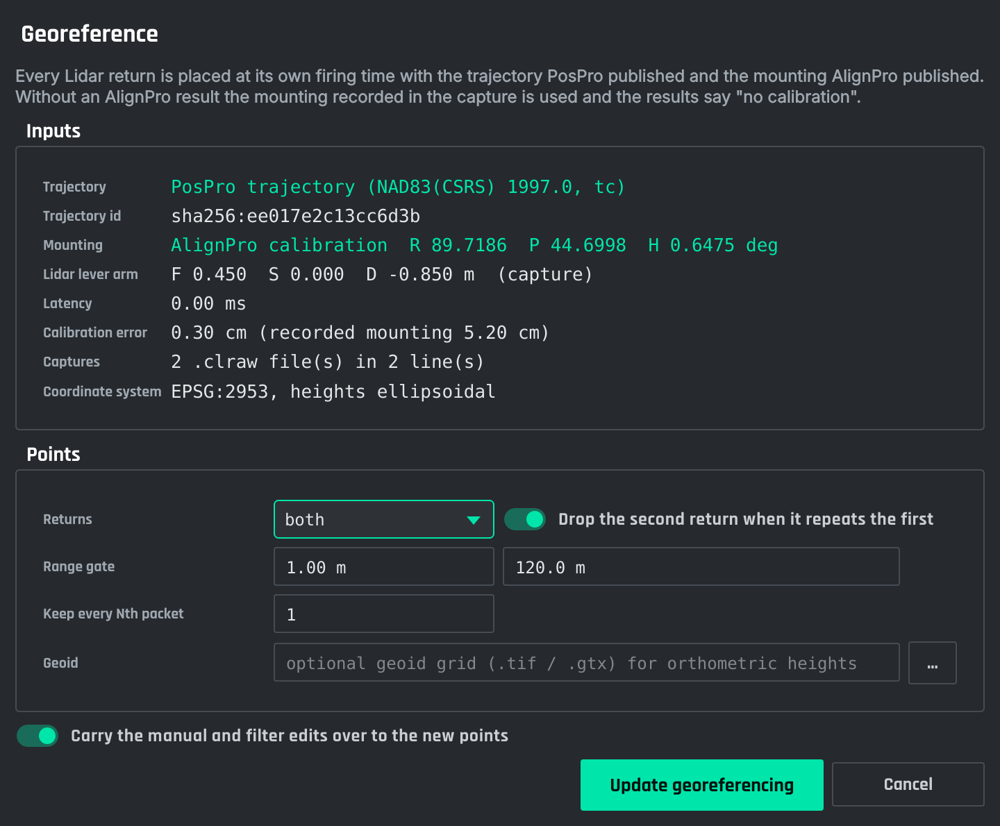
| Part | What it shows or sets |
|---|---|
| Inputs | Trajectory and its id, Mounting (roll, pitch, heading), Lidar lever arm (forward, starboard, down) and where it came from, Latency, Calibration error (AlignPro's average error, and that of the recorded mounting), the number of captures and lines, the coordinate system. Green is the chain's best input; amber is a fallback. Warnings follow in amber, each starting with !. |
| Returns | both, last or strongest. Drop the second return when it repeats the first (on by default). |
| Range gate | Returns nearer than the first value or further than the second are not imported (default 1 to 120 m). |
| Keep every Nth packet | 1 keeps all points; N thins the import by keeping every Nth Lidar packet. |
| Skip points while stopped | Leaves out the points recorded while the vehicle stands still (below 0.3 m/s, from the trajectory). Parked or waiting, the scanner repeats the same spot about a million times a second, which adds noise, disk space and time to every update. On for new projects; an update keeps what the lines used before until you change it. |
| Geoid | An optional geoid grid (.tif, .gtx) for orthometric heights; empty gives ellipsoidal heights. |
| Carry the manual and filter edits over to the new points | Only on a project with points (on by default). Edits are matched by firing time, laser and return, so they follow the points to their new positions. |
The point options of the previous georeferencing are filled in again. Press Georeference (or Update georeferencing). The work runs in the background; the status strip at the bottom of the window shows the progress and a Cancel button. The new points are built beside the current ones and replace them only when everything has worked: after Cancel, an error, or a trajectory that does not cover a line georeferenced before, the previous points and every edit are kept as they were. While a task runs, the actions that would change the points or the project (Undo, editing, the menu, the filters, opening another project) wait; looking around and navigating stay available.
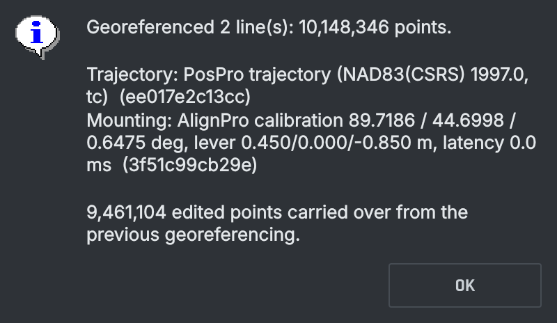
Each run writes a log in 03_CloudPro/log/ and a line in the History tab.
CloudPro compares the PosPro and AlignPro results its points were built with against what those stages have published now, every few seconds. When they differ, or when the georeferencing values in Project Properties were changed, the inputs line turns amber with the reason and the workflow strip's button reads Update georeferencing:
The reasons read, for example, PosPro has published a new trajectory since the points were georeferenced, AlignPro has published a calibration (the points use the recorded mounting) or the georeferencing values in Project properties changed. Press Update georeferencing on the strip, keep Carry the manual and filter edits over… ticked, and press Update georeferencing. Then publish again: publishing without updating still leaves CloudPro out of date in the workflow boxes, because cloud.json names the results the points were really built from.
When AlignPro has not published, or Project Properties › Survey configuration is set to Recorded in the capture (no calibration), the dialog shows the recorded mounting in amber:
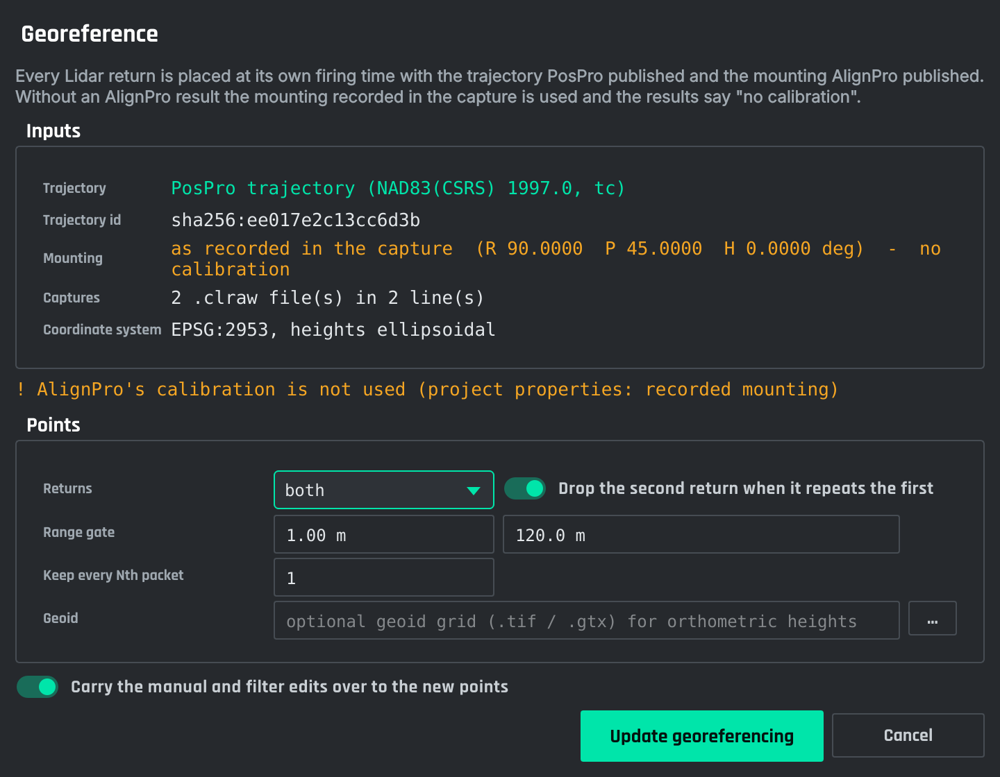
With Entered here in the same tab, the mounting, lever arm and latency you type are used and the results say entered values. These values are kept in CloudPro's project; the captures are not changed. See Project Properties.
To see the extent, coverage and density of what was collected (does the area need more lines?) you do not need a post-processed trajectory, a base station or a calibration:
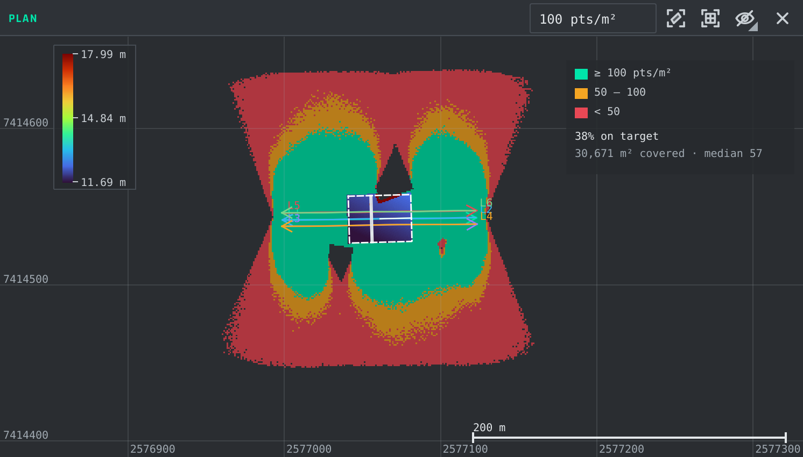
Density counts the points kept in the project: rejected points are left out, and a decimation or range limit set when georeferencing lowers it. From the command line, cloudpro info prints the same summary (--target, --cell).
When PosPro and AlignPro publish later, the points turn out of date; Update georeferencing on the workflow strip re-georeferences them and keeps your edits (Out of date).
.clraw files, asks Add N file(s) to the job's captures? The captures are shared by PosPro, AlignPro and CloudPro., adds them to the shared project and opens the Georeference dialog.A project from CloudPro 1.0 (<name>.cloudpro.json) still opens, without the chain. For it, Georeference and Add other .clraw files open the import dialog, where you choose the inputs yourself; publishing is not available (use Export).
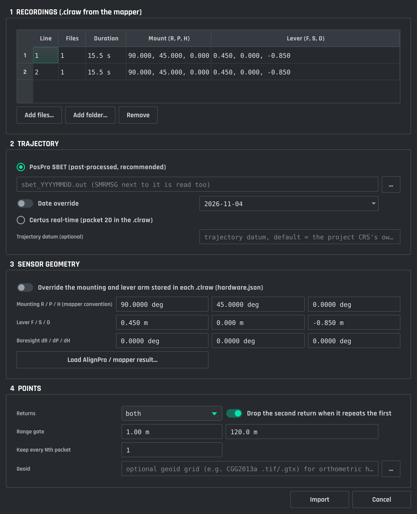
| Group | Settings |
|---|---|
| 1 Recordings | Add files…, Add folder… (all .clraw below it), Remove. One row per recording: line, files, duration, recorded mounting and lever arm. |
| 2 Trajectory | PosPro SBET (post-processed, recommended) with the file (an SBET beside the captures is filled in; the SMRMSG next to it is read too) and Date override for SBET names without a date; or Certus real-time (packet 20 in the .clraw). Optional trajectory datum. |
| 3 Sensor geometry | Override the mounting and lever arm stored in each .clraw, mounting R / P / H, lever F / S / D, boresight dR / dP / dH; Load AlignPro / mapper result… reads them from a JSON file. |
| 4 Points | Returns, duplicate second returns, range gate, every Nth packet, geoid, as in the Georeference dialog. |
Path in 03_CloudPro/ | Holds |
|---|---|
cloudpro.json | CloudPro's settings: lines, inputs used, view, history, filter runs, entered values. |
filters/groups.json | The filter groups of this project. |
work/store/ | The point store in 50 m tiles and the project grids. A cache of the raw data: it can be deleted, Georeference rebuilds it (the edits are lost then). |
work/lines/ | The sensor track of each line. |
out/ | What Publish delivers (Publishing). |
log/ | One log per run (georeference, filter, tune, publish). |
While a job's cloud is open in CloudPro it is locked for editing: a second QGIS that opens the same project is told This job's point cloud is open elsewhere and does not open it. Georeferencing, project-wide filter runs and publishing also hold the stage lock, which shows CloudPro as running in the workflow boxes.
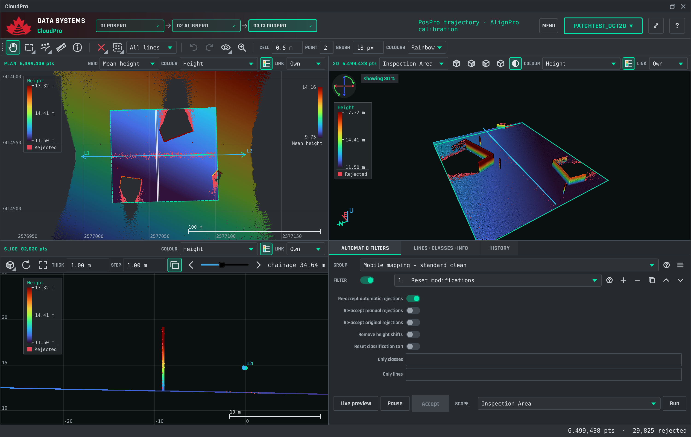
| Part | What it holds |
|---|---|
| Header | Workflow boxes, inputs line, MENU, project box, Window and user guide buttons (chapter 3). |
| Tool bar | Tools, edit action, undo, display settings (below). Drag its grip (the dots on the left) to move it to another side or float it. |
| Plan (top left by default) | The whole project as a grid, the drive lines, the Inspection Area and its points from above. |
| Slice (bottom left by default) | A thin slab of the Inspection Area from the side: a cross-section or a profile. |
| 3D (top right by default) | The Inspection Area, or only the slice, in 3D. |
| Tabs (bottom right by default) | Automatic filters, Lines · Classes · Info, History: three windows tabbed together. |
| Status strip | Messages on the left; the cursor position (E and N in the Plan; chainage or offset and Z in the Slice); the points loaded, rejected and selected; the progress bar and Cancel while a task runs. |
All three views show only the points inside the Inspection Area, the box you work in; the Plan's background grid is the only thing drawn from the whole project.
Each view and each panel is a window of its own inside CloudPro. Its title bar is the strip along its top (the view's title, colour and tools):
| To | Do this |
|---|---|
| Resize | Drag the line between two windows. |
| Move | Drag the window's title bar (an empty part of the strip) to another side; a highlight shows where it will go. |
| Tab windows together | Drop a window's title bar on another window. Tabs appear along the bottom; click one to bring it to the front. |
| Float a window | Click its float button (two overlapping squares, top right of the strip) or double click its title bar. It becomes a window of its own, for example on a second screen. Float it again, or drag it back, to dock it. |
| Close a window | Click its ×. MENU › Windows brings it back. |
| Start again | MENU › Windows › Reset the window layout. |
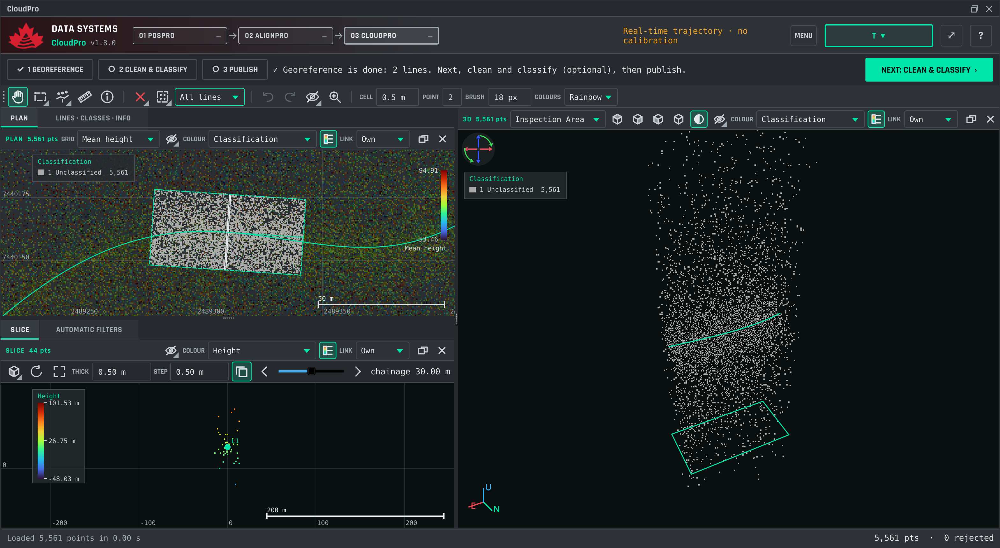
The layout is remembered on this computer for next time. A view that is closed, or hidden behind another tab, is not drawn or updated while you work, so closing the 3D view when you do not need it makes every edit and every move faster; it catches up when it is shown again.
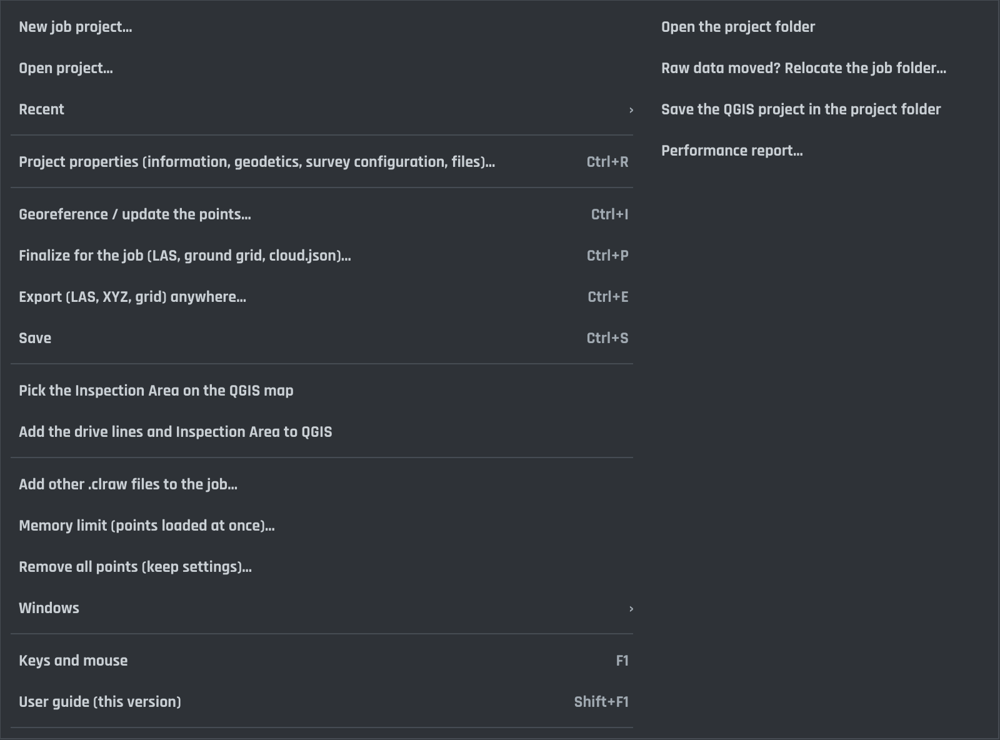
| Item | Key | Does |
|---|---|---|
| Project properties (information, geodetics, survey configuration, files)… | Ctrl+R | Project Properties |
| Georeference / update the points… | Ctrl+I | Georeferencing |
| Publish for the job (LAS, ground grid, cloud.json)… | Ctrl+P | Publishing |
| Export (LAS, XYZ, grid) anywhere… | Ctrl+E | Export |
| Save | Ctrl+S | Saves the project, the view and the filter groups. Edits are written to disk as you make them, and CloudPro saves quietly every 2 minutes. |
| Pick the Inspection Area on the QGIS map | QGIS layers | |
| Add the drive lines and Inspection Area to QGIS | ||
| Add other .clraw files to the job… | Georeferencing | |
| Memory limit (points loaded at once)… | Large areas | |
| Remove all points (keep settings)… | Georeferencing | |
| Windows | Show or hide each window; Reset the window layout (above). | |
| Keys and mouse | F1 | A summary of the keys and mouse actions (Reference). |
| User guide (this version) | Shift+F1 | This guide. |
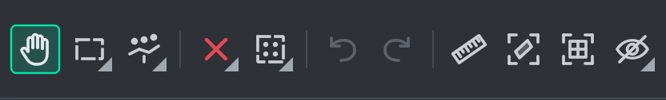
| Button | Options (key) |
|---|---|
| Hand | Pan (Space): drag to move the view; in the Plan, move, resize and rotate the Inspection Area. |
| Selection shape | Rectangle (G), Polygon (P), Lasso (L), Brush (B). |
| Line | Above a line (U), Below a line (J). |
| Ruler | Measure (M): distance, bearing, height difference, slope. |
| i | Point information (I): click a point. |
| Action | Reject (X), Accept (V), Select (S), Classify (K, with the class list next to it), Filter (F: runs the current filter group on the shape). The shape you draw (rectangle, polygon, lasso, brush, above / below) shows the action: red for Reject, green for Accept, grey for Select (teal for Classify and Filter). |
| Inside / outside | Edit the points inside the shape, or the visible points outside it. |
| Class list | Shown with Classify: the class it sets (1–7, 9, 11, 14, 18, 64–71). |
| Line list | All lines, or Only L1, Only L2…: edits and line-limited filter runs leave the other lines alone. |
| Undo, Redo | Ctrl+Z, Ctrl+Y. The Undo tooltip names the step it would undo. |
| Eye | Rejected points hidden, or shown in magenta, in every view at once (H). Each view also has its own eye in its title bar. |
| Magnifier | Zoom all views to the Inspection Area (Ctrl+Home). |
| Cell | Cell of the project grid under the Plan, chosen from the list: 0.5, 1, 2, 2.5, 5, 10, 12.5 or 25 m (the stored 0.5 m grid summed into larger cells). |
| Point | Point size in pixels (1–6). |
| Brush | Brush radius in pixels (2–200). |
| Colours | Colour ramp for height, intensity and range: Rainbow, Viridis, Terrain, Mint, Grey. |
Buttons with a small triangle in the corner hold several options. The first click on an inactive one makes it active; each further click switches to its next option. Click the corner triangle, or right-click the button, for the list:
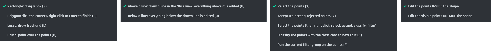
Choosing an action while the hand, ruler or i is active switches to the last selection shape, ready to draw. Hover any button for its name and key.
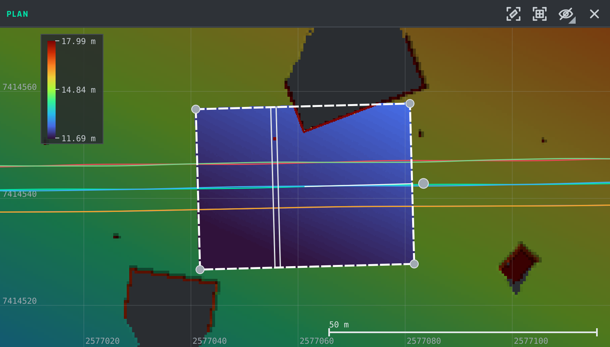
The Plan header has Grid (the background of the whole project: Mean height, Max height, Min height, Span, Hit count, Density (pts/m²), Coverage against a target density (see Field check), Reject count, Intensity or None), and the colour controls every view has (Colours). The grid is dimmed so the points of the Inspection Area stand out on top; heights are hill shaded. Edits update the grid within a few seconds.
Each drive line is drawn in its line colour, labelled at its start (L1, L2…) with an arrow at its end. The slice is shown as two thin lines across or along the Inspection Area.
With the Pan tool:
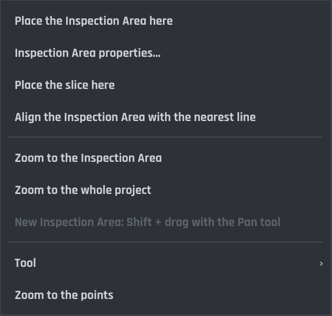
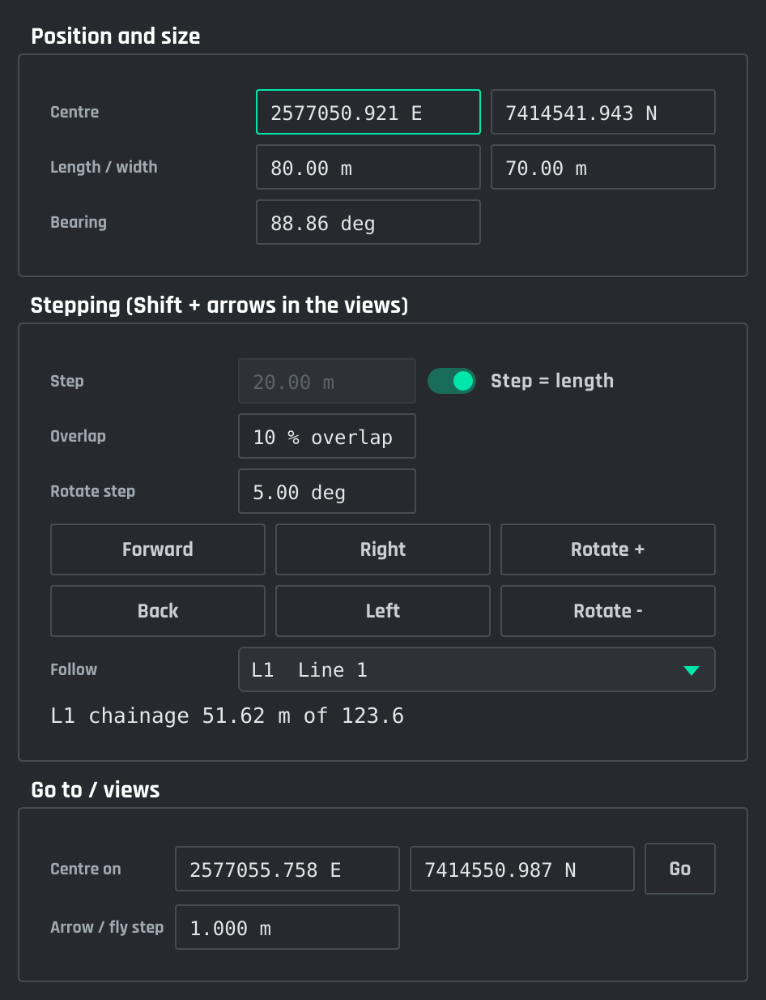
Right-click in the Plan for Place the Inspection Area here, Inspection Area properties…, Place the slice here, Align the Inspection Area with the nearest line (centred on the nearest drive line and turned along it), Zoom to the Inspection Area, Zoom to the whole project, the Tool list and Zoom to the points. With a selection, a Selection submenu comes first (Manual editing).
This window stays open beside the views. Every change applies at once.
| Group | Settings |
|---|---|
| Position and size | Centre E and N, length and width, bearing of the long axis (degrees clockwise from grid north). |
| Stepping (Shift + arrows in the views) | Step in metres, or Step = length: forward and back by the length, left and right by the width, less the Overlap %. Rotate step in degrees. Buttons Forward, Back, Right, Left, Rotate +, Rotate -. |
| Follow | Free (straight steps) or a drive line: the area moves onto the line, steps along its chainage and turns with it. The chainage is shown below (L1 chainage 51.62 m of 123.6). |
| Go to / views | Centre on E and N, then Go. Arrow / fly step: the distance the arrow keys pan the 2-D views and W / A / D / Q / E move the 3D view. |
In the Lines list, right-click a line and choose Inspection Area follows this line for the same.
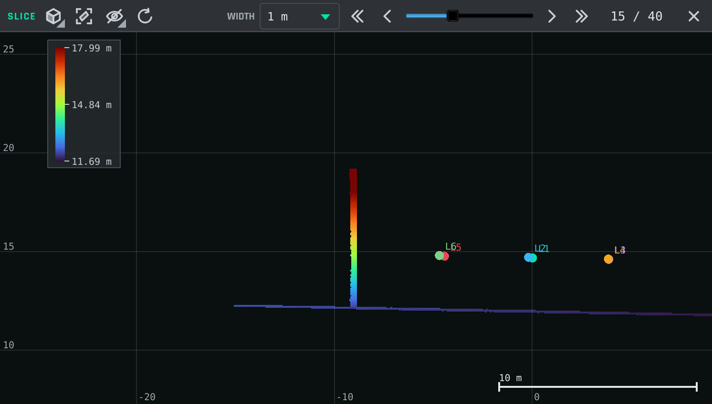
The Slice view shows a slab of the Inspection Area from the side: a cross-section across the area, looking along it, or a profile along the area, seen from the side. The bar above the view:
| Control | Does |
|---|---|
| Direction button | Cross-section or profile (click to switch). |
| Rotate | Rotate the slice 90 degrees (cross-section ↔ profile). |
| Whole area | The profile covers the full width of the area. |
| Thick | Slice thickness. |
| Step, Step = thickness | The step of previous / next. With Step = thickness on, the step follows the thickness, so slices follow each other without gaps. |
| ‹ slider › | Previous slice, the position in the area, next slice. The position is shown on the right as chainage (cross-section) or offset from the axis (profile). |
Step with PgUp / PgDn, ] / [ or . / ,; five steps at a time with Ctrl+PgUp / Ctrl+PgDn or } / {. When a cross-section walks past the end of the area, the area moves on by half its length (along the line it follows, if any), so a corridor can be walked one slice at a time. Right-click in the Slice for Rotate the slice 90 degrees, Previous slice and Next slice; Place the slice here in the Plan puts it under the mouse. Shift + wheel sets the vertical exaggeration (shown next to the scale bar).
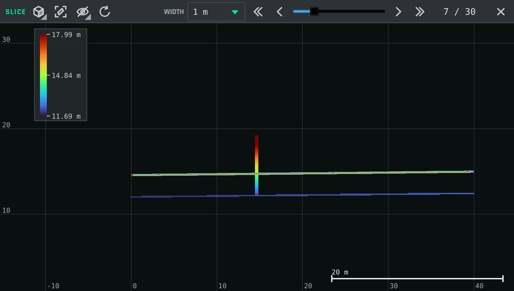
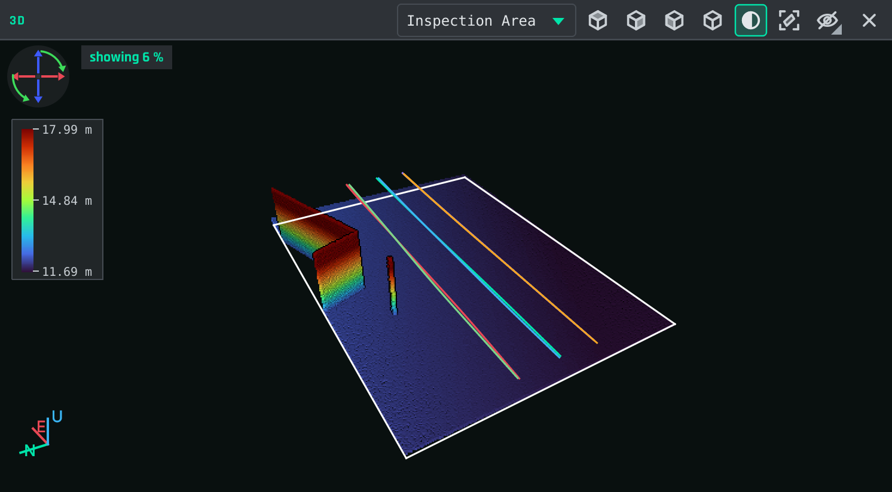
The header has what to show (Inspection Area or Slice), four view presets (top 1, look across to see the side 2, look along the area 3, oblique 4), eye-dome lighting (depth shading, on by default) and the colour controls.
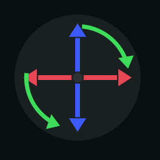
Navigation arrows. Click an arrow head to turn the cloud that way (its near side moves in the arrow's direction): blue tips it up or down (into the page), red turns it left or right, green turns the picture clockwise or anticlockwise on the screen. Each click turns 22.5° (16 clicks round); hold the button to keep turning smoothly. The presets undo any on-screen turn.
Centre of rotation. The 3D view turns around the centre of the Inspection Area, at the middle height of its points, and the centre follows the area when you move or step it. Panning or double-clicking a point moves the centre for a closer look; the Zoom to the Inspection Area button in the 3D header (corner brackets around a rectangle), 0 or Home bring it back and show the whole area.
Mouse. Left drag turns the cloud the way you move, as if holding it (drag right and its near side moves right); Shift + left drag or middle drag pans; the wheel zooms; Ctrl + wheel scales Z (shown as Z x2.0); double-click a point to make it the centre (its information appears in the Info tab); right drag draws a lasso, or a rectangle when the Rectangle tool is active, and applies the current action.
Keys (click the view first): W / A / D fly forward, left and right and Q / E down and up, by the arrow / fly step; O switches orthographic projection; 0 or Home zooms to the Inspection Area; + / - zoom; Esc cancels a selection.
The 3D view is drawn without graphics drivers, so it works on any computer. While you move, it draws fewer points to stay fluid; a still frame that would take more than about 0.3 s also draws a part only and says showing N % beside the title (Large areas).
Each view has its own Colour, a scale bar button and Link:
| Colour | Points coloured by |
|---|---|
| Height | Height, with the ramp chosen in Colours. |
| Intensity, Intensity (range normalised) | Intensity (grey when the ramp is Rainbow), or intensity × (range / 10 m)². |
| Classification | The class colour (classes table). |
| Line, File | The line's colour, or one colour per .clraw file. |
| Return | Green last or single return, amber strongest. |
| Channel | The laser (1–32). |
| Time, Range | Firing time (UTC), distance from the Lidar. |
On top of any scheme: rejected points are magenta (where a view shows them); in a filter preview, orange points will be rejected and green ones re-accepted; selected points are white.
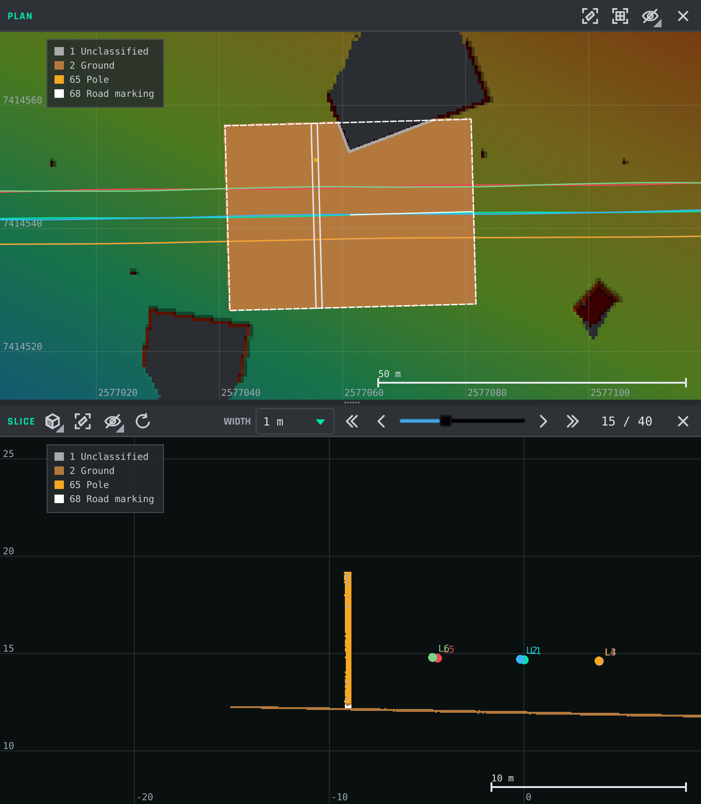
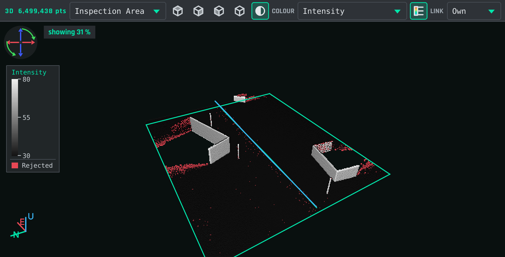
Hidden points are not edited, by hand or by a filter run from a shape.
Zoom buttons. Every view has Zoom to the Inspection Area in its header (corner brackets around a rectangle): the Plan centres on the area, the Slice shows the area's full width (cross-section) or length (profile), the 3D view centres its rotation on the area. The Plan also has Zoom to the extents (corner brackets around a grid): the whole project. The magnifier on the tool bar (Ctrl+Home) zooms all three to the area at once.
In the Plan and the Slice: the wheel zooms at the cursor; middle drag pans with any tool; double-click centres there; Home zooms to the points; + / - zoom; the arrow keys pan by the arrow / fly step; Shift + arrow keys step the Inspection Area (forward, back, left, right) and Shift+PgUp / Shift+PgDn step it forward and back. Grid labels and the scale bar are in project coordinates.
bin/windows/cpengine.dll, bin/linux/libcpengine.so), on every core but one, so QGIS stays responsive. It gives exactly the same points and filter results as CloudPro's Python code; the History log says which one did the work (engine 1 or Python). CloudPro loads a copy of it kept in your user folder (%LOCALAPPDATA%\CloudPro\engine on Windows), so the plugin folder is never locked and the plugin manager can always upgrade or remove CloudPro. If the library cannot be loaded, CloudPro carries on with the Python code, only slower.| Shape | How to draw it |
|---|---|
| Rectangle | Drag a box. |
| Polygon | Click the corners; right-click, Enter or double-click to finish. Backspace removes the last corner. |
| Lasso | Draw freehand while holding the button. |
| Brush | Paint over the points; the circle shows the brush radius (Brush on the tool bar). |
| Above / below a line | In the Slice, click the points of a line; right-click, Enter or double-click to finish. Everything above (or below) the line, between its two ends, is edited. The side that will be edited is shaded while you draw. |
Esc cancels a shape. The points edited are the visible points inside the shape, or with outside the visible points outside it.
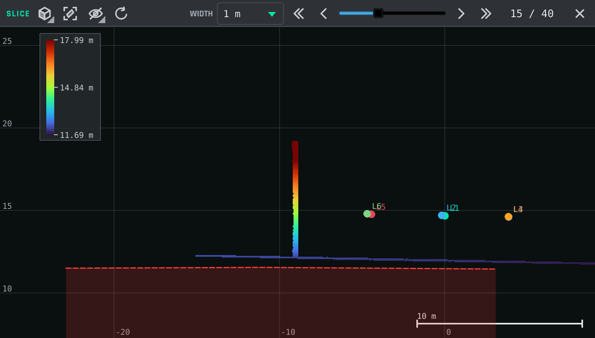
With Select, the points in the shape turn white and the status strip gives their number; hold Shift to add to the selection. Then right-click a view:
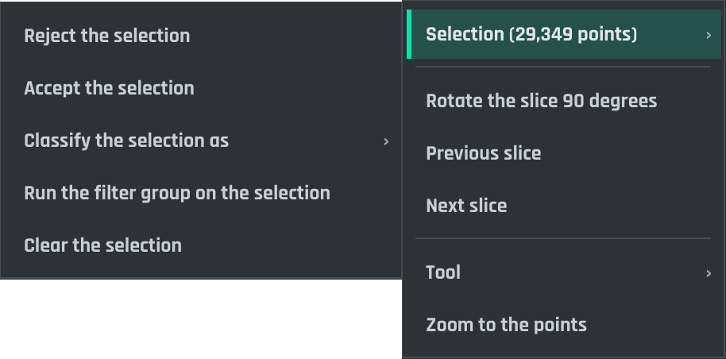
Reject the selection, Accept the selection, Classify the selection as (a class), Run the filter group on the selection, Clear the selection. Delete rejects the selection; Ctrl+D clears it.
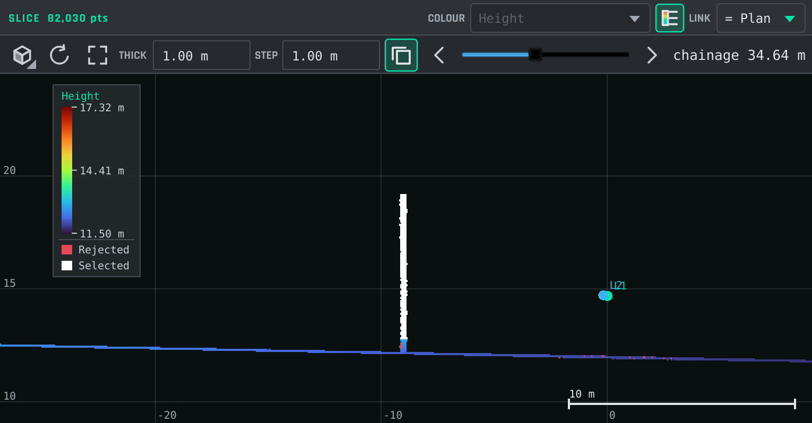
With the Filter action, the current filter group of the Automatic filters tab runs on the points in the shape only (all loaded points still count as neighbours), and its result is applied at once. This is a quick way to clean one spot with, for example, an outlier filter.
With the ruler (M), click two points. In the Plan it gives the distance and the bearing; in the Slice the horizontal and vertical differences, the slope in % and the distance. The result also appears in the status strip; Esc clears it.
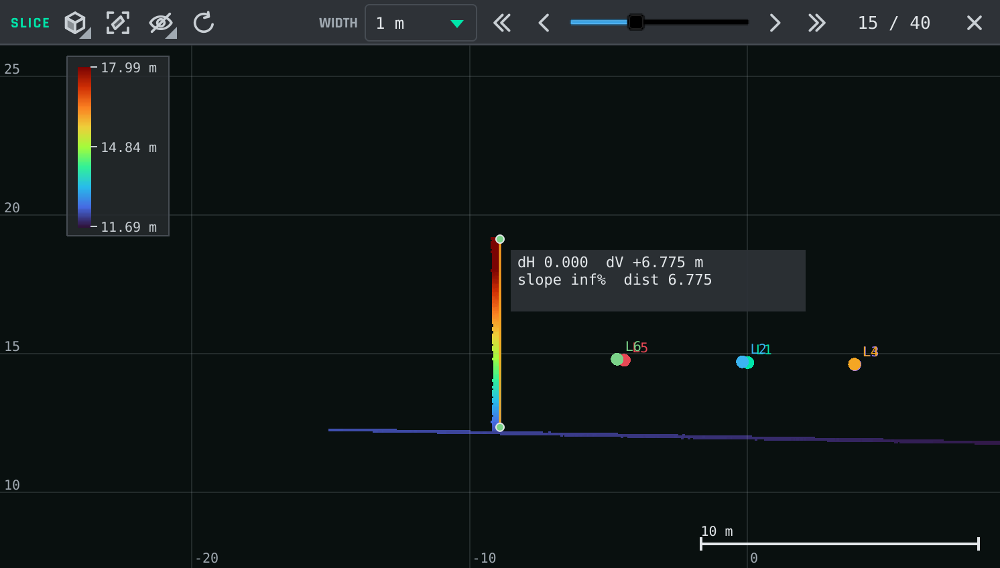
With the i tool (I), click a point: its coordinates, time, line, file, laser, return, range, azimuth, intensity, class and status appear in the Info tab (Lines · Classes · Info). A crosshair marks the point under the mouse.
Filters are kept in groups. A group runs its filters in order, each on the result of the one before. Nothing changes until you accept the preview or run the group.
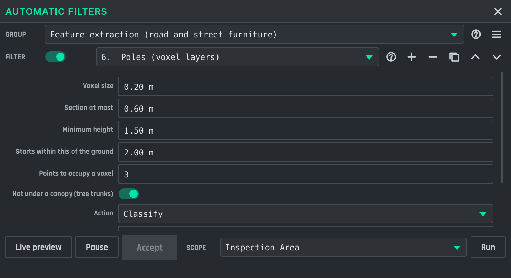
| Row | Controls |
|---|---|
| Group | The group list; ? explains the group and lists its filters; the menu button ☰ (below). |
| Filter | The switch turns the filter on or off (off filters are skipped and marked (off)); the list of the group's filters, numbered in running order; ? gives what the filter does, every setting and the source paper; + adds a filter after this one, − removes it, the copy button duplicates it, the arrows run it earlier or later. |
| Settings | The selected filter's settings fill the space below. Hover a setting for its help. Every filter ends with Only classes and Only lines (comma lists such as 1,2 or 1,3-4; empty = all). |
| Bottom | Live preview, Pause, Accept, Scope, Run, and the result of the last preview or run. |
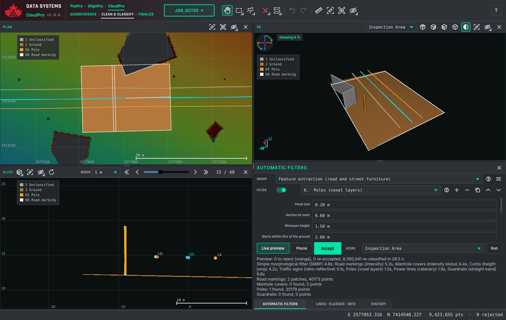
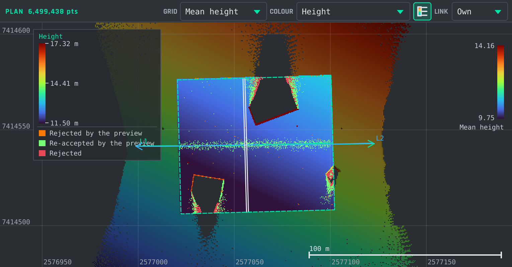
| Scope | Run |
|---|---|
| Inspection Area, Slice | Runs in the background on the loaded points; one undo step. |
| Selected lines (whole project) | Asks first, then edits the stored points tile by tile (50 m tiles with a 10 m buffer, so neighbourhood filters see across tile edges). Selected lines are the line chosen in the tool bar's line list, else the lines ticked in the Lines list. The run is one undo step when it changes up to 20 million points; above that it cannot be undone (on projects of 20 million points or more the question says so): Reset modifications then re-accepts automatic rejections. |
| Entire project |
Every accepted preview and run is recorded with its group, settings, scope and number of points changed; Publish writes these into the report and cloud.json.
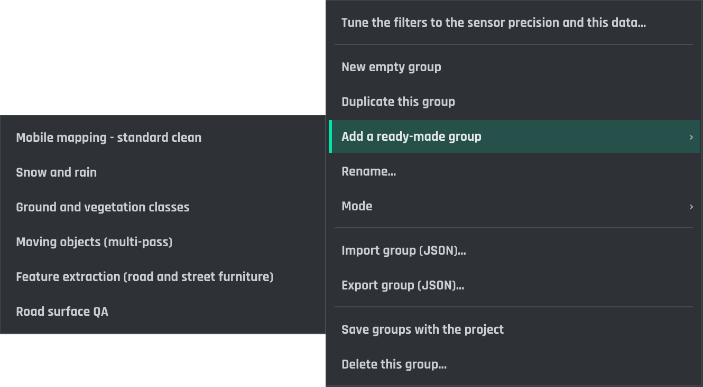
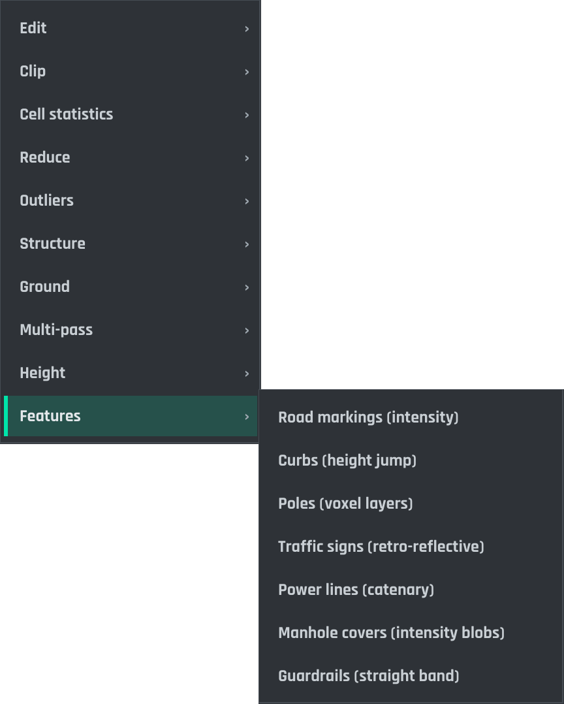
| Item | Does |
|---|---|
| Tune the filters to the sensor precision and this data… | See Tuning. |
| New empty group, Duplicate this group | Adds a group (the copy is named (copy)). |
| Add a ready-made group | Adds a fresh copy of one of the groups below. |
| Rename… | Renames the group. |
| Mode | Combined: all lines filtered together (lines that fit well). Individually: each line filtered on its own (lines that do not fit in height). Reset modifications and Edit classification always run combined. |
| Import group (JSON)…, Export group (JSON)… | Share groups between projects. |
| Save groups with the project | Writes filters/groups.json (Save and the 2-minute autosave do the same). |
| Delete this group… | After a confirmation; the last group cannot be deleted. |
Ready-made groups added in a later version are added to older projects' lists automatically.
| Ready-made group | Filters, in order |
|---|---|
| Mobile mapping - standard clean | Reset modifications · Vehicle self-hits · Isolated cluster (0.5 m, fewer than 8 points) · Statistical outlier (k 12, SD multiplier 3) · Snow / rain / dust (DIOR) · SMRF · Height above ground (reject more than 0.25 m below ground) |
| Snow and rain | Reset modifications · Snow / rain / dust (DIOR, intensity threshold 20) · Isolated cluster (0.4 m, fewer than 5 points) · Low hit count (0.4 m, fewer than 3) |
| Ground and vegetation classes | Inverted cloth (0.5 m, clip 0.2 m) · Height above ground (classify vegetation) · Vertical plane (classify walls, nothing behind) |
| Moving objects (multi-pass) | Moving objects / ghosts · Isolated cluster (fewer than 20 points) |
| Feature extraction (road and street furniture) | SMRF · Road markings · Manhole covers · Curbs · Traffic signs · Poles · Power lines · Guardrails |
| Road surface QA | Surface fit (class 2, gate 0.05 m) · 95% confidence level (class 2, limit 0.04 m) |
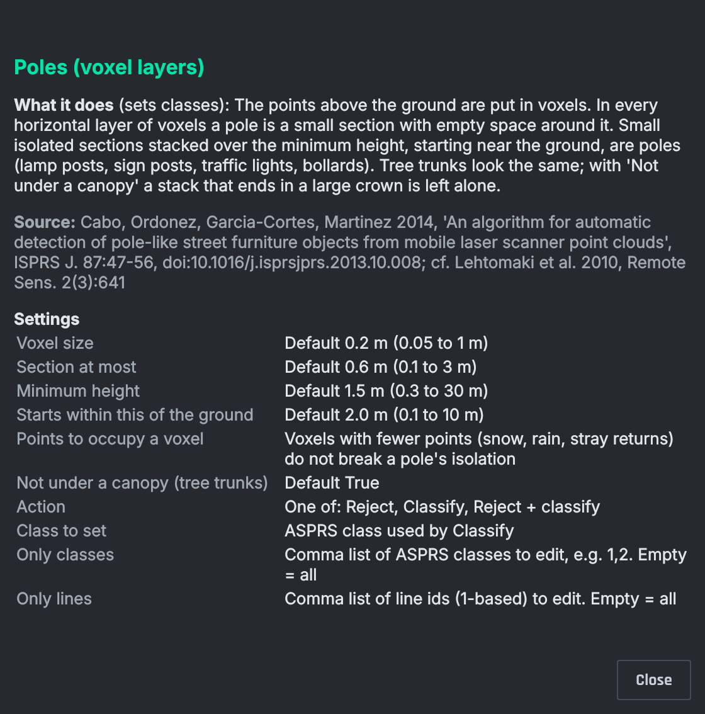
Filters that need a reference raster (Clip reference surface) show a Reference raster list above their settings: the raster layers of the QGIS project, or Choose a raster file….
☰ › Tune the filters to the sensor precision and this data… measures the noise of the loaded Inspection Area and combines it with the error budget of the hardware: the Hesai XT32 (range precision 0.5 cm, 1 sigma) and the Certus Evo, or, when PosPro published one, the standard deviations of the trajectory actually used (SMRMSG). Load an Inspection Area on a road seen by two or more passes first; with fewer than 1,000 points loaded CloudPro asks you to.
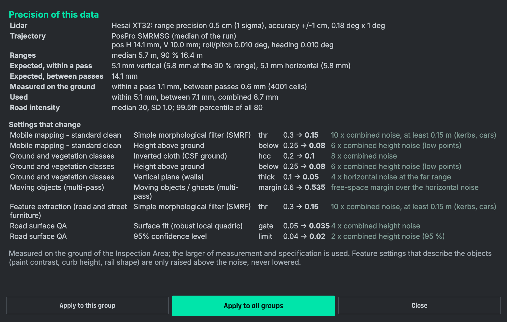
The noise within a pass is measured on the ground of each line, and between passes on the ground seen by two lines; the larger of measurement and specification is used. Height and distance tolerances follow the noise. Feature settings that describe the objects (paint contrast, curb height, rail shape) are only ever raised above the noise, never lowered. Choose Apply to this group, Apply to all groups or Close. The tuning is written to a log and the measured precision is kept in the project.
Default values are in brackets. The action of the feature, eigenvalue and moving-object filters is Reject, Classify or Reject + classify, with Class to set. The source of each published method is given by its ? and in docs/REFERENCES.md in the plugin folder.
| Filter | What it does | Main settings |
|---|---|---|
| Reset modifications | Re-accepts rejected points by reason, removes height shifts and/or resets the classification. | Re-accept automatic (on), manual (off), original (off) rejections; Remove height shifts; Reset classification to 1. |
| Edit classification | Sets the class and/or status of the points that meet a condition. Put it last with Rejected by this group to mark which group rejected a point. | Only when point: Any, Is accepted, Is rejected, Rejected - automatic / manual / original, Rejected by this group, Modified by this group; Set class (−1 = keep); Set status: Keep, Accept, Reject. |
| Filter | What it does | Main settings |
|---|---|---|
| Clip absolute height | Rejects points outside a height range. | Minimum (−100 m), Maximum (1000 m); Clip outside / Clip inside. |
| Clip intensity | Absolute: rejects outside a range. Relative: rejects outside the cell mean ± k·SD of the cell and its neighbour rings (high, low or both). | Mode; Minimum (0), Maximum (255); Cell size (1 m); Neighbour rings (1); SD multiplier (3); Range-normalise. |
| Clip range / sensor geometry | Rejects returns by range, height above or below the sensor, side of the vehicle, azimuth window. | Min. (0) / max. range (200 m); Max. height above (100 m) / depth below sensor (100 m); Side: Both, Port only, Starboard only; Azimuth window (0–360°). |
| Clip laser channel / return | Rejects by laser id and/or return type. | Reject laser ids (e.g. 1,2,30-32); Reject return: None, Last (1st block), Strongest (2nd block). |
| Clip time | Newest per cell keeps, per cell, only points newer than the newest minus the maximum age (the latest pass over a changed area); Window rejects outside a UTC time of day. | Mode; Max. age (60 s); Cell size (1 m); Window from / to (s of day UTC). |
| Vehicle self-hits | Rejects returns in a box around the Lidar in the vehicle frame (roof rack, mast, the vehicle, people around a parked vehicle). | Forward (2.5 m), Backward (3 m), Half width (1.2 m), Above (0.5 m), Below sensor (1.6 m; keep it above the road). |
| Clip reference surface | Rejects points outside a gate around a reference raster (DEM, earlier survey, design). Cells without reference are ignored. | Reference raster; Max. above (0.3 m) / below reference (0.3 m). |
| Filter | What it does | Main settings |
|---|---|---|
| 95% confidence level | Per cell, rejects the point furthest from the median until 1.96·SD is below the limit or the minimum count is reached. For surfaces (use Only classes = 2 after ground classification). | Cell size (0.5 m); Max. 95% confidence (0.05 m); Min. points in cell (5); Max. iterations (50). |
| Low hit count | Rejects all points of a cell or voxel holding fewer accepted points than the minimum. | Cell size (0.5 m); Min. points (3); 2-D cells / 3-D voxels. |
| Clip mean height | Rejects points further than the gate from the mean of the cell and its neighbour rings; Point centred uses a cell around each point, without it. | Cell size (1 m); Reject outside mean ± (0.3 m); Neighbour rings (1); Point centred. |
| Lonely cells | Rejects points in cells not connected by a side to the main survey cells. | Cell size (0.5 m); Keep groups of at least (cells; 0 = only the largest). |
| Filter | What it does | Main settings |
|---|---|---|
| Reducer (voxel) | Keeps the point closest to each voxel centre and rejects the others; with a few mm it removes duplicate points. | Horizontal (0.05 m) and vertical voxel size (0.05 m). |
| Reducer (scan based) | Keeps every Nth rotation of the scanner and/or every Nth laser channel. | Keep every Nth rotation (1); Keep every Nth channel (1). |
| Filter | What it does | Main settings |
|---|---|---|
| Statistical outlier (SOR) | Rejects points whose mean distance to their k nearest neighbours is above the mean + α·SD of all points; Range adaptive scales the distances by range first. Run it early (Rusu et al. 2008). | Neighbours k (12); SD multiplier (2.5); Range adaptive (on). |
| Radius outlier (ROR) | Rejects points with fewer than N neighbours within radius R. | Radius (0.3 m); Min. neighbours (3). |
| Snow / rain / dust (DROR, LIOR, DIOR) | DROR: radius outlier removal with a radius growing with range. LIOR / DIOR first keep every bright return and test only the dim ones, which protects signs, markings and thin structures (Charron et al. 2018; Park et al. 2020; Roriz et al. 2022). | Method (DIOR); Beta (3); Azimuth step α (0.18°: the XT-32 at 600 rpm; × N when keeping every Nth packet); Min. search radius (0.04 m); Min. neighbours (3); ROR radius (0.2 m); Intensity threshold (18); Only within range (40 m). |
| Isolated cluster | Groups points within the point interval of each other and rejects small clusters, or all but the largest. Z scale < 1 makes it less sensitive vertically. | Point interval (0.5 m); Reject clusters smaller than (10 points); Mode; Z scale (1). |
| Slope / spike filter | Rejects points steeper than the limit to their neighbours that stand out above or below all of them. For surfaces (Vosselman 2000). | Neighbours (8); Max. mean slope (1); Direction: Both, Spikes up, Spikes down; Min. height difference (0.05 m). |
| Surface fit (robust local quadric) | Fits a robust plane or quadric through each point's neighbours (without the point) and rejects it when further than the gate. Run it after the large spikes are gone. | Neighbours (16); Reject gate (0.08 m); Surface: Plane, Quadric. |
| Filter | What it does | Main settings |
|---|---|---|
| Vertical plane (walls) | Finds vertical planes (facades, walls) by RANSAC. Points in the plane can be classified (6 building); points behind it, seen from the Lidar, are usually reflections through glass or interior returns and can be rejected. | Thickness (0.1 m); Max. tilt (5°); Min. points per plane (2000); Min. wall height (1 m); Max. planes (6); Inside: Nothing / Classify / Reject, class (6); Behind: Nothing / Reject / Classify, class (7), further than (0.3 m). |
| Geometric features (eigenvalues) | From the local covariance: scattered (noise, vegetation), linear (wires, poles, edges), planar vertical (walls), planar horizontal (ground, roofs) (Demantké et al. 2011; Weinmann et al. 2015). | Select (Scattered); Neighbours k (16); Feature threshold (0.5); Verticality threshold (0.85); Action (Classify), class (1). |
| Filter | What it does | Main settings |
|---|---|---|
| Inverted cloth (CSF ground) | Turns the cloud upside down and drops a simulated cloth on it; points near the settled cloth are ground (Zhang W. et al. 2016). | Cloth resolution (0.5 m); Scene: 1 Steep slope, 2 Relief, 3 Flat, 4 Super flat; Max. iterations (500); Clip distance (0.25 m); Slope smoothing; Class for non-ground (1; −1 = keep); Reject non-ground. |
| Simple morphological filter (SMRF) | Progressive opening of a minimum surface, then an elevation threshold growing with the slope. Few settings, robust in towns (Pingel et al. 2013). | Cell size (0.5 m); Slope (0.15); Max. window (18 m); Elevation threshold (0.3 m); Elevation scalar (1.25); Class for non-ground; Reject non-ground. |
| Progressive morphological filter (PMF) | Openings of a minimum grid with a growing window and a slope-dependent height threshold (Zhang K. et al. 2003). | Cell size (0.5 m); Slope s (1); Max. window (20 m); Initial (0.15 m) and max. height threshold (2.5 m); Window growth; Final ground tolerance (0.25 m); Class for non-ground; Reject non-ground. |
| Height above ground | Builds a DEM from the ground class (2) and rejects points below the ground (multipath, low noise) or high above it, or classifies vegetation 3 / 4 / 5 or a height band among the unclassified points. Needs a ground filter first. | DEM cell (0.5 m); Mode: Reject below ground, Reject above, Classify vegetation, Classify band; Below by more than (0.25 m); Above by more than (40 m); Low (0.5 m) / medium vegetation up to (2 m); Band from / to, class. |
| Filter | What it does | Main settings |
|---|---|---|
| Moving objects / ghosts (multi-pass) | Follows the laser rays of each pass through a voxel grid. A point is a moving object (car, pedestrian, cyclist) when another pass saw through its voxel. Needs two or more lines over the same place (Schauer & Nüchter 2018). | Voxel size (0.25 m); Min. free-space rays (2); Ray sampling (1 in 3); Max. ray length (40 m); Stop before the return (0.6 m); Protect voxels next to a pass's own returns (1); Action (Reject), class (64). |
| Shift height | Shifts the points up (+) or down (−), added to any existing shift. | Shift (0 m). |
The feature filters need ground first: the ready-made group starts with SMRF. Their intensity thresholds were set on XT-32 data; check them on your first job, or run Tuning.
| Filter (class) | What it does | Main settings |
|---|---|---|
| Road markings (intensity) (68) | Road points near the drive line are split into bands by distance, each with its own Otsu threshold; bright points are gridded, gaps closed, small patches dropped (Guan et al. 2014). | Image cell (0.1 m); Band width (2.5 m); Minimum contrast (40); Road up to (0.15 m) above ground; Only ground-class points; Minimum area (0.05 m²); Distance from the drive line (0–15 m). |
| Curbs (height jump) (69) | Cells whose neighbourhood rises by a curb's height over a short distance with a steep face, in runs of a minimum length (Yang et al. 2013). | Grid cell (0.1 m); Window (0.3 m); Height jump 0.08–0.3 m; Steeper than (40°); Minimum length (2 m); Distance from the drive line (1–20 m). |
| Poles (voxel layers) (65) | Small isolated sections stacked over the minimum height, starting near the ground. With Not under a canopy tree trunks are left alone (Cabo et al. 2014). | Voxel size (0.2 m); Section at most (0.6 m); Minimum height (1.5 m); Starts within (2 m) of the ground; Points to occupy a voxel (3); Not under a canopy (on). |
| Traffic signs (retro-reflective) (67) | Bright clusters at sign height that are planar, upright and of sign size; the whole plate is then classified (Riveiro et al. 2016). | Intensity at least (180); Height above ground 1.2–7 m; Cluster distance (0.3 m); Minimum points (15); Planarity (0.7); Area 0.1–4 m²; Include the plate within (0.06 m). |
| Power lines (catenary) (14) | High points with free space above and below, clustered along their length, kept when long, straight in plan and fitting a catenary (Guan et al. 2016). | Higher than (4 m); Voxel size (0.25 m); Free space (1 m); Points per voxel (3); Cluster distance (1.5 m); Minimum length (5 m); Fit RMS (0.15 m); Straight within (0.5 m). |
| Manhole covers (intensity blobs) (70) | Round blobs of the road's intensity image that differ from the background, of a cover's size (Guan et al. 2014). | Image cell (0.08 m); Contrast (20); Covers appear: Brighter, Darker, Either; Diameter 0.4–1.2 m; Roundness (0.55); Road up to (0.1 m); Distance from the drive line (0–10 m). |
| Guardrails (straight band) (71) | A long, straight band of points at rail height beside the road, parallel to the drive line, with nothing above it (Gao et al. 2022). | Height above ground 0.4–1.2 m; Cluster distance (0.5 m); Minimum length (4 m); Line fit RMS (0.1 m); Occupied slices (60%); Parallel within (20°); Points above at most (15%); Distance (0.5–15 m). |
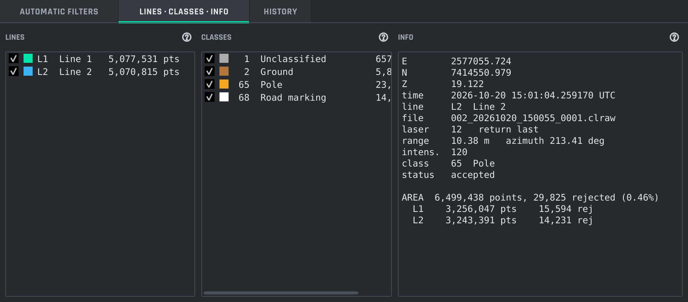
| Column | Shows and does |
|---|---|
| Lines | One line per mapper recording, with its colour and point count. Untick to hide its points (hidden points are not edited). Right-click a line: Show only this line, Show all lines, Edit only this line (sets the tool bar's line list), Inspection Area follows this line. |
| Classes | The classes in the loaded Inspection Area with their colour and count (during a preview, the previewed classes). Untick to hide a class. |
| Info | The point clicked with the i tool or double-clicked in 3D: E, N, Z, time (UTC, to the microsecond), line, file, laser and return, range and azimuth, intensity, class, status (accepted, or rejected and why) and any height shift. Below, the Inspection Area: points and rejections, the selection, and the points and rejections per line. |
The ? of each column explains it.
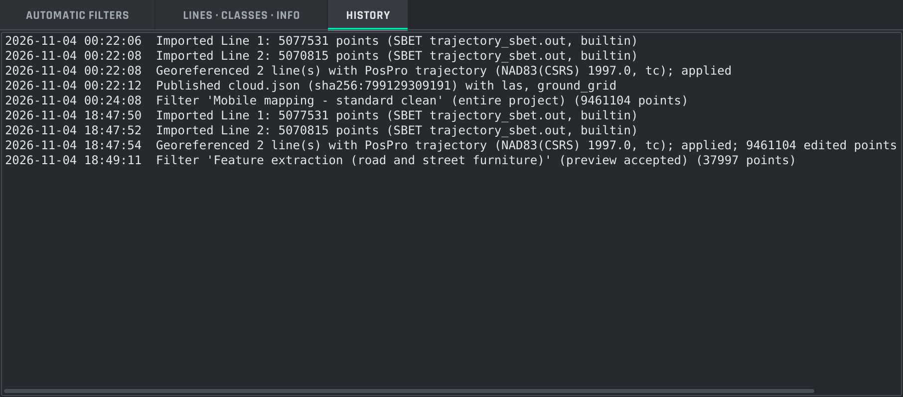
History lists the last 400 entries of the project's history: imports and georeferencing, filter runs and accepted previews, manual edits with their number of points, undo and redo, and publishing.
MENU › Project properties… or Ctrl+R (also in the project box) opens a window that can stay open, or be minimised, while you work. Nothing in it changes the raw captures.
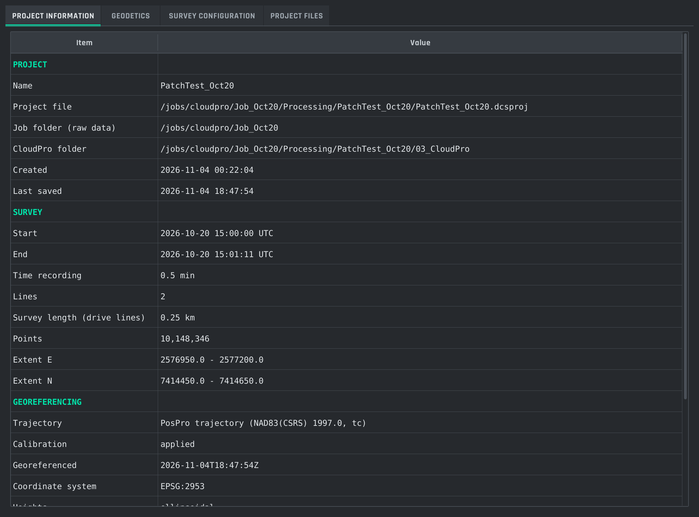
Project information lists the project (name, project file, job folder, CloudPro folder, created, last saved), the survey (start, end, time recording, lines, survey length of the drive lines, points, extent, location of the centre in latitude and longitude), the georeferencing (trajectory, calibration, when, coordinate system, heights), the chain with the state of each stage, and the last publication.
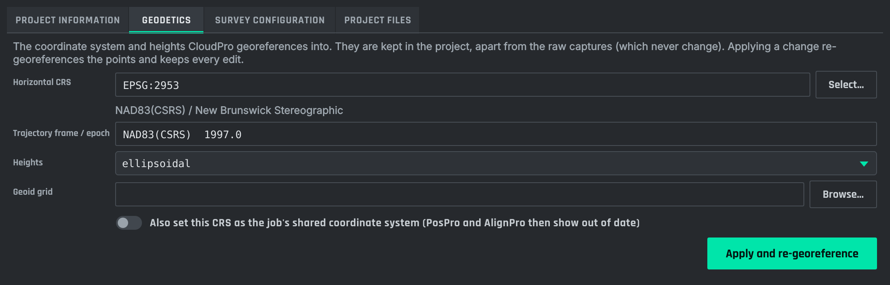
Geodetics sets the coordinate system and heights CloudPro georeferences into: Horizontal CRS (type an EPSG code or Select…), the trajectory frame and epoch (read only), Heights ellipsoidal or orthometric with a Geoid grid, and Also set this CRS as the job's shared coordinate system (PosPro and AlignPro then show out of date). Apply and re-georeference opens the Georeference dialog, keeping every edit; the new CRS and heights (and the shared CRS, when ticked) take effect only when the georeferencing has finished, so cancelling leaves the project as it was. For orthometric heights a geoid grid is required.
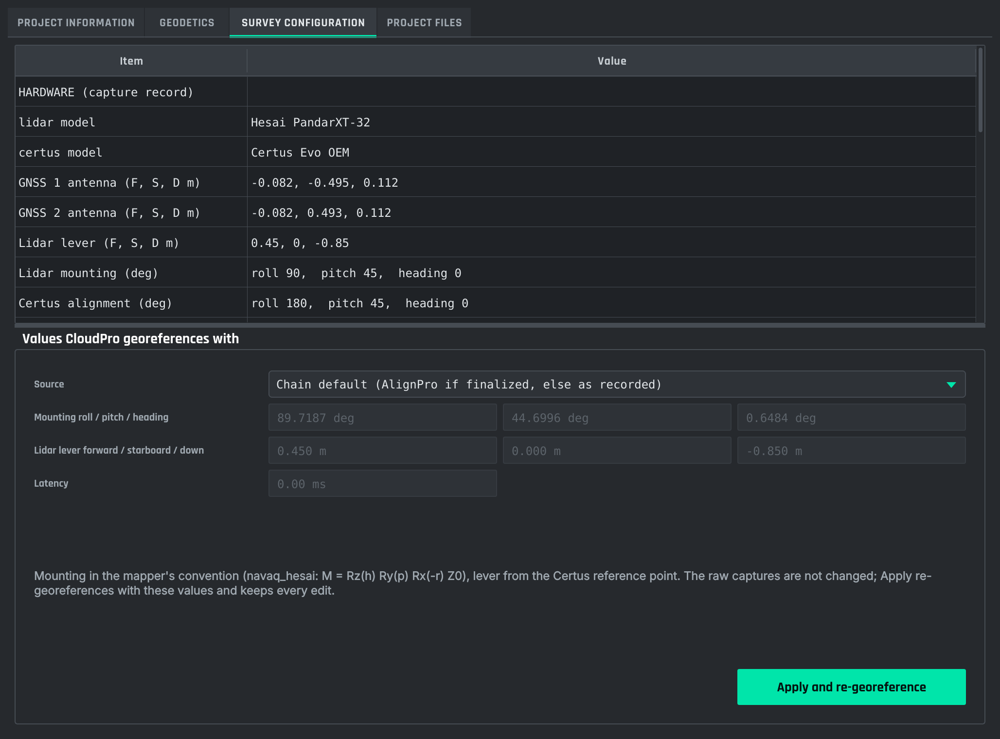
Survey configuration shows the hardware recorded in the captures (Lidar and Certus models, GNSS antennas, Lidar lever arm and mounting, Certus alignment, coordinate system, vehicle, connections), PosPro's trajectory (frame, mode, fixed %, maximum sigmas, base station, levers, id) and AlignPro's calibration (mounting, lever arm, latency, boresight, average error, id). Below it, Values CloudPro georeferences with:
| Source | Uses | Results say |
|---|---|---|
| Chain default (AlignPro if published, else as recorded) | AlignPro's calibration, else the recorded mounting | applied or no calibration |
| Recorded in the capture (no calibration) | The mounting recorded in the capture, even when AlignPro published | no calibration |
| Entered here | The mounting roll / pitch / heading, Lidar lever forward / starboard / down and latency typed here | entered values |
The mounting is in the mapper's convention, the lever arm from the Certus reference point. Apply and re-georeference keeps the values in the project and opens the Georeference dialog; if you cancel it, the points are shown as out of date until you update.
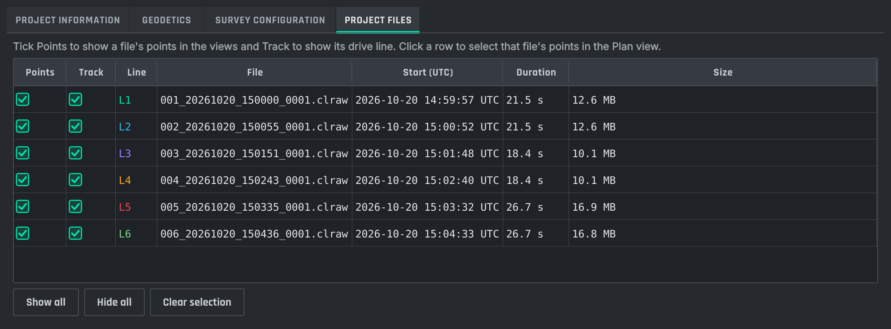
Project files has one row per .clraw file: Points shows or hides its points in the views, Track its drive line in the Plan; line, file, start (UTC), duration and size. Click a row to select that file's points in the Inspection Area and draw its drive line thicker (move the area onto the drive line if no points are selected). Show all, Hide all, Clear selection.
Publish is the job's delivery, in 03_CloudPro/out/, recorded in the chain. Export writes a copy anywhere, for any purpose.
MENU › Publish for the job (LAS, ground grid, cloud.json)… (Ctrl+P). The project must be a job project of the chain and georeferenced.
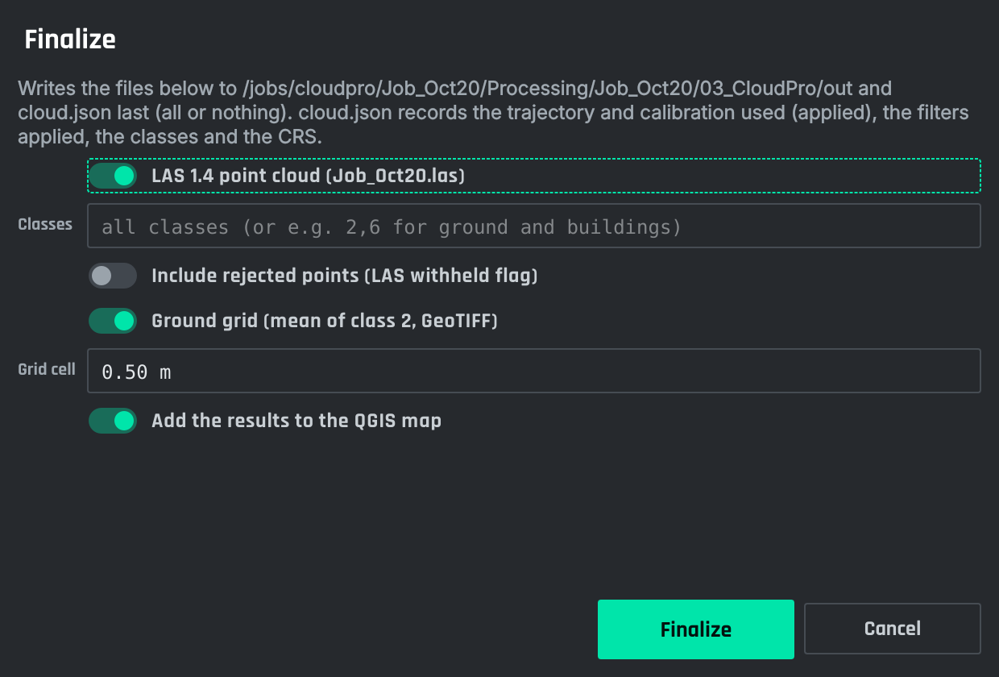
| Option | Effect |
|---|---|
| LAS 1.4 point cloud (<Name>.las) | The whole cloud, all lines. |
| Classes | Empty for all classes, or a list (e.g. 2,6). |
| Include rejected points (LAS withheld flag) | Off: rejected points are left out. On: they are written with the withheld flag. |
| Ground grid (mean of class 2, GeoTIFF), Grid cell | A grid of the mean height of the accepted ground points (gaps of up to 2 cells filled), at the chosen cell (0.5 m). |
| Add the results to the QGIS map | Adds the LAS and the grid to the CloudPro group of the QGIS project. |
At least one of the LAS and the ground grid must be ticked. Publishing runs in the background and is all or nothing: the files are written under temporary names and renamed at the end.
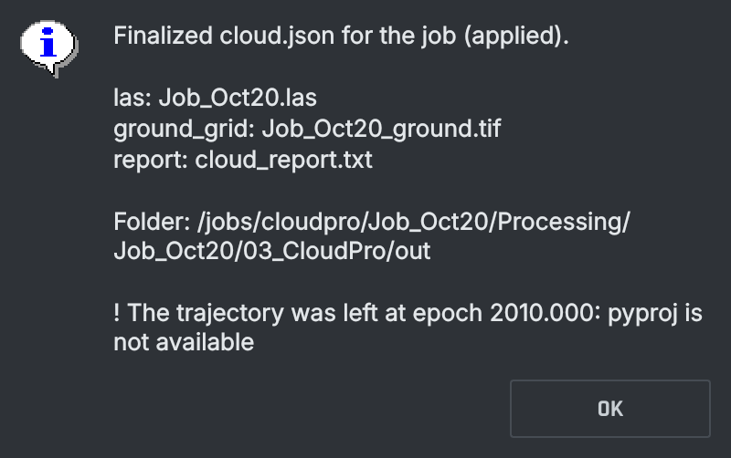
File in out/ | Content |
|---|---|
<Name>.las | LAS 1.4, point data record format 6, with the CRS as WKT. User data holds the laser channel (0–31, the laser id minus one), point source id the line number, GPS time in adjusted standard time; the scan angle is 0. |
<Name>_ground.tif | The ground grid (an ESRI ASCII .asc grid when GDAL is not available). |
cloud_report.txt | Readable report: inputs (trajectory, calibration, mounting, lever arm, latency, CRS, heights), lines, point and class counts, filters applied with their settings, outputs, warnings. |
cloud.json | Written last, through DCS Core: the calibration state, the trajectory and alignment results the points were really georeferenced with, the georeferencing values, CRS (frame, epoch, heights, geoid), lines and files, point and class counts (accepted, rejected manual and automatic), every filter run with its settings, the outputs and the warnings. |
Because cloud.json names the PosPro and AlignPro results used, CloudPro shows ⚠ stale when they publish again, until you update the georeferencing and publish again.
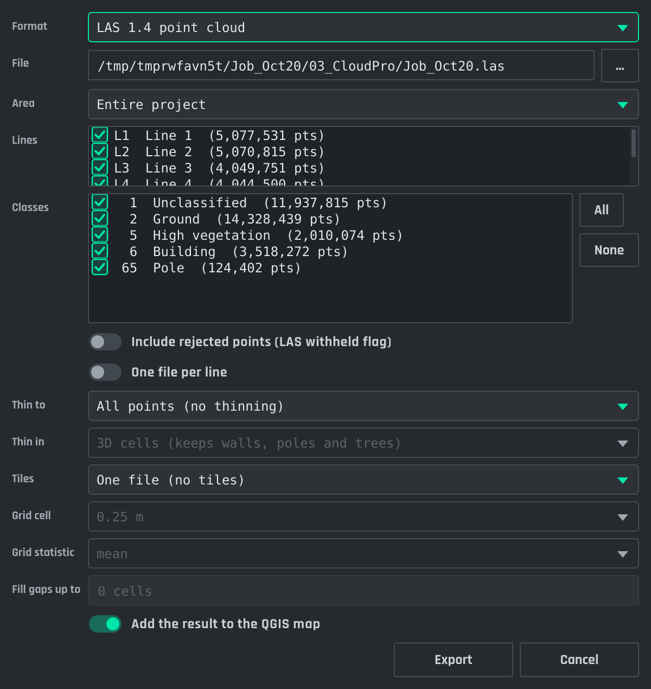
| Setting | Choices |
|---|---|
| Format | LAS 1.4 point cloud (as published), XYZ text (CSV) with the columns E, N, Z, I (intensity), C (class), L (line), T (UTC time), or Grid surface (GeoTIFF). |
| File | Defaults to 03_CloudPro/<Name>.las; the extension follows the format. |
| Area | Entire project or Inspection Area. |
| Lines, Classes | Ticked lines; empty for all classes, or a list. |
| Include rejected points, One file per line | LAS only. One file per line adds _L001, _L002… to the name. |
| Grid cell, Grid statistic, Fill gaps up to | Grid only: cell (0.25 m); mean, min, max, count or intensity; empty cells filled from the nearest value up to N cells away. Grids use accepted points only. |
| Add the result to the QGIS map | Adds the file to the CloudPro group of the QGIS project. |
<Name>.qgz beside the .dcsproj.The same steps run without the window, with the same project, inputs, entered values and filter groups. Run them with the QGIS Python (the OSGeo4W shell on Windows) from the folder that holds the cloudpro and dcs_core plugin folders, e.g. %APPDATA%/QGIS/QGIS3/profiles/default/python/plugins.
python -m cloudpro.cli import D:/Job/Processing/Street/Street.dcsproj python -m cloudpro.cli update D:/Job/Processing/Street/Street.dcsproj python -m cloudpro.cli filter D:/Job/Processing/Street/Street.dcsproj --group "Mobile mapping - standard clean" python -m cloudpro.cli publish D:/Job/Processing/Street/Street.dcsproj --dem 0.5 python -m cloudpro.cli info D:/Job/Processing/Street/Street.dcsproj
| Command | Does | Options |
|---|---|---|
import | Georeferences the job's captures with PosPro's trajectory and AlignPro's mounting (or the fallbacks), carrying edits over. Prints the inputs and warnings. | --clraw files or folders instead of the job's captures; --returns both|last|strongest; --rmin, --rmax (1, 120 m); --mount R P H and --lever F S D override the mounting (then no calibration). |
update | Re-georeferences with the current inputs, keeping every edit. | – |
filter | Runs a group on the whole project, tile by tile, and records it. | --group name (the project's groups, then the ready-made ones); --lines e.g. 1,3-4. |
publish | Publishes LAS, optional ground grid, report and cloud.json. | --dem cell (0 = no grid); --classes; --include-rejected. |
info | Name, CRS, lines and points, coverage (area with points, median density, share at or above the target), the state of each stage and what is out of date. | --target 100 (pts/m²), --cell 1 (m) |
export | Writes LAS, XYZ or a grid. | --las, --xyz, --grid file; --cell (0.5 m), --stat mean|min|max|count|intensity, --classes, --lines, --per-line, --include-rejected. |
create | Creates an older-style stand-alone project (no chain). | folder name --crs EPSG:2953 --tile 50; for its import: --sbet (omit for the real-time track), --bore dR dP dH. |
A run in a job project holds the stage lock and writes a log in 03_CloudPro/log/.
| Message or symptom | What to do |
|---|---|
| CloudPro needs the DCS Core plugin… (QGIS message bar) | Install DCS Core (chapter 2), then restart QGIS. |
| No .clraw files were found in the job's captures | Check the job folder, use MENU › Add other .clraw files to the job…, or relocate a moved job folder. |
| Raw data not found when opening | Answer Yes and point to the job folder's new location, or later use Raw data moved? Relocate the job folder…. |
| This job's point cloud is open elsewhere | Another QGIS has the job's cloud open for editing. Close it there first. |
| PosPro has not published a trajectory for this project: the Certus real-time track is used | Run PosPro, then Update georeferencing on the workflow strip. |
| Inputs line amber, no calibration | AlignPro has not published (or the source is set to the recorded mounting). Run AlignPro, then Update georeferencing on the workflow strip. |
| AlignPro used the … convention, CloudPro expects navaq_hesai: calibration not used | Publish the calibration again with a current AlignPro. |
| The AlignPro calibration was solved on an earlier PosPro trajectory | Run AlignPro again on PosPro's current trajectory. |
| Out of date: … | Press Update georeferencing on the workflow strip, then publish again (Update georeferencing). |
| the trajectory (…) does not cover line … | The trajectory does not span that capture; process the whole recording in PosPro. |
| No Zstandard decoder is available to read .clraw files | In the OSGeo4W shell: python -m pip install zstandard, then restart QGIS. |
| .clraw format_version … is newer than this version of DCS Core understands | Update DCS Core and the plugins. |
| Choose a geoid grid for orthometric heights. | Browse for a geoid grid in Geodetics, or choose ellipsoidal heights. |
| This Inspection Area holds about N million points… | Load it anyway, make the area smaller (Inspection Area properties) or raise MENU › Memory limit. |
| 3D shows showing N % | Normal on large areas; selecting and editing still use every point. |
| Another task is still running. | Wait for the progress bar to finish, or press Cancel. |
| Load an Inspection Area with points… (Tuning) | Load an area with at least 1,000 points, ideally a road seen by two passes. |
| Filter messages: no ground class yet - run a ground filter first, Moving objects: needs two or more lines in the area, Clip reference surface: no reference raster selected, Vehicle self-hits: no sensor track for these lines | Add a ground filter (SMRF) before; place the area where two passes overlap; choose a reference raster; georeference the line again. |
| Features missed or found too often | Run Tuning, then adjust the intensity settings of the filter (its ? explains each one). |
| Publishing is for job projects of the DCS chain… | An older stand-alone project: use Export. |
| The user guide is not in this installation | Reinstall CloudPro from its zip. |
Each georeferencing, project-wide filter run, tuning and publication writes a log in 03_CloudPro/log/; a failed task shows its error in a message and leaves the earlier results in place.
| Key / mouse | Does |
|---|---|
| Space, G, P, L, B | Pan, rectangle, polygon, lasso, brush |
| U, J, M, I | Above a line, below a line, measure, point information |
| X, V, S, K, F | Reject, accept, select, classify, filter |
| H | Show / hide rejected points in every view |
| Delete, Ctrl+D | Reject the selection, clear the selection |
| Ctrl+Z, Ctrl+Y | Undo, redo |
| PgUp / PgDn, ] / [, . / , | Next / previous slice |
| Ctrl+PgUp / Ctrl+PgDn, } / { | Five slices on / back |
| Shift + arrows, Shift+PgUp / Shift+PgDn | Step the Inspection Area |
| Arrows, + / -, Home | 2-D views: pan by the step, zoom, zoom to the points |
| Ctrl+Home | Zoom all views to the Inspection Area |
| Wheel, Shift + wheel | Zoom at the cursor; vertical exaggeration in the Slice |
| Middle drag, double-click | 2-D views: pan with any tool, centre here |
| Enter, Backspace, Esc | Finish a polygon or line, remove its last point, cancel |
| 3D: left drag, Shift + left or middle drag, right drag | Orbit, pan, lasso or rectangle edit |
| 3D: wheel, Ctrl + wheel, double-click | Zoom, Z scale, new centre and point information |
| 3D (click in it first): W S A D Q E, 1–4, O, 0 | Fly, top / along / across / oblique, orthographic, fit |
| Ctrl+R, Ctrl+I, Ctrl+P, Ctrl+E, Ctrl+S | Properties, georeference, publish, export, save |
| F1, Shift+F1 | Keys and mouse, this guide |
Classes follow ASPRS LAS 1.4, with CloudPro's classes 64–71.
| Class | Name | Class | Name | Class | Name |
|---|---|---|---|---|---|
| 0 | Created, never classified | 9 | Water | 64 | Vehicle (dynamic) |
| 1 | Unclassified | 10, 11 | Rail, road surface | 65 | Pole |
| 2 | Ground | 13, 14 | Wire - guard, wire - conductor | 66 | Snow / rain |
| 3, 4, 5 | Low, medium, high vegetation | 15, 17 | Transmission tower, bridge deck | 67, 68 | Traffic sign, road marking |
| 6 | Building | 18, 19 | High noise, overhead structure | 69, 70 | Curb, manhole cover |
| 7 | Low point (noise) | 20 | Ignored ground | 71 | Guardrail |